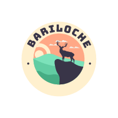

Name
Bariloche Chamber of Commerce
Logo
Site Purpose
The purpose is to provide information on the tourist sites of Bariloche, its maritime excursions, the tours and activities that can be done in its lakes and mountains.
Bariloche Chamber of Commerce
The purpose is to provide information on the tourist sites of Bariloche, its maritime excursions, the tours and activities that can be done in its lakes and mountains.